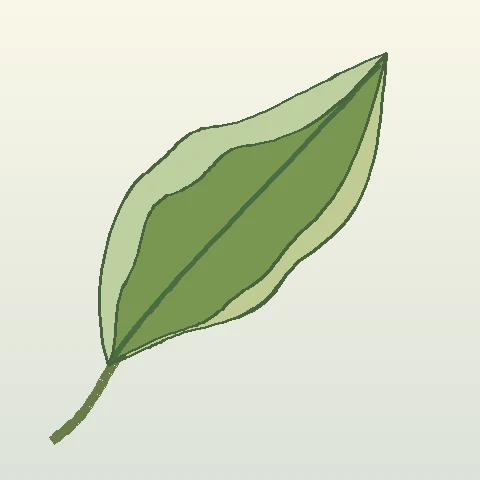

Low humidity
Curling leaf margins
This is one possible explanation. Compare the signs below with those on your plant.

What to look for
Note the direction of curling, compare midday and evening leaves and test soil moisture.
Possible causes and next steps
Heat, dry winds and feeding injury can curl margins. Match the response to exposure, moisture or confirmed insects.